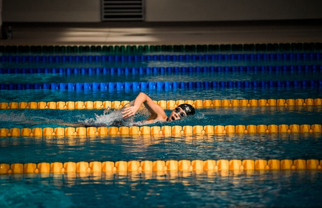

The front crawl or forward crawl, also known as the Australian crawl or American crawl, is a swimming stroke usually regarded as the fastest of the four front primary strokes.
As such, the front crawl stroke is almost universally used during a freestyle swimming competition, and hence freestyle is used metonymically for the front crawl. It is one of two long axis strokes, the other one being the backstroke.
Unlike the backstroke, the butterfly stroke, and the breaststroke, the front crawl is not regulated by the FINA. This style is sometimes referred to as the Australian crawl although this can sometimes refer to a more specific variant of front crawl.